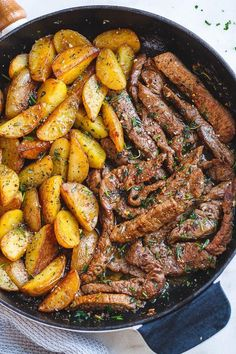
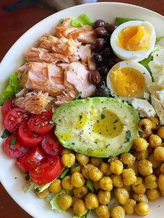
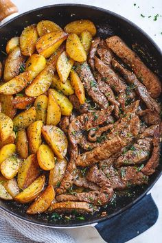
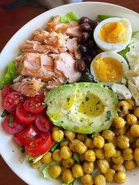

Cuida tu cuerpo,es el unico lugar donde puedes vivir
 




쯇orque es importante comer saludable?
Una dieta saludable ayuda a protegernos de la malnutrición en todas sus formas,
así como de las enfermedades no transmisibles,, entre ellas la diabetes,las cardiopatías,
los accidentes cerebrovasculares y el cáncer.
쮺uales son los beneficios?
Generalizando, se puede decir que la alimentación saludable es aquella que proporciona
los nutrientes que el cuerpo necesita para mantener el buen funcionamiento del
organismo, conservar o restablecer la salud, minimizar el riesgo de enfermedades,
garantizar la reproducción, gestación, lactancia.